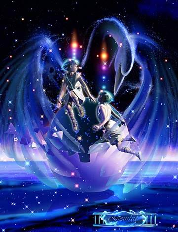

斯巴達國王的妃子麗妲，同時生下了兩對雙胞胎。一對男女取名 Castor 和 Tritolemus ，另一對是宙斯化身成為天鵝親近她之後所生下的一男一女取名為 Hecules 和 Helen 。
Castor 及 Hecules 兩兄弟，從小人緣及感情都非常好， Castor 擅於騎術和馴馬，經常結伴狩獵及參加冒險活動，而 Hecules 則擅長拳擊。有一次因故與 Iasaion 和林薩斯起了衝突， Iasaion 殺死了 Castor 。Zeus 一怒便用雷電劈死了 Iasaion ，而 Hecules 也在激烈的爭鬥中將林薩斯殺死。
Hecules 看著死去兄弟的屍體，傷心的請求諸神讓他和 Castor 同死；Zeus 憐憫 Hecules 的手足情深，便將 Hecules 的壽命分一半給 Castor 共享。
從此兩人便永不分離，半生的時間住在地獄，半生的時間住在奧林匹斯－天堂的神殿裡。而 Zeus 也為了記念二人的兄弟之情而把他們帶上了天界，化成了雙子座，亦有人說他們是人類之神，也是水手們的保護者。